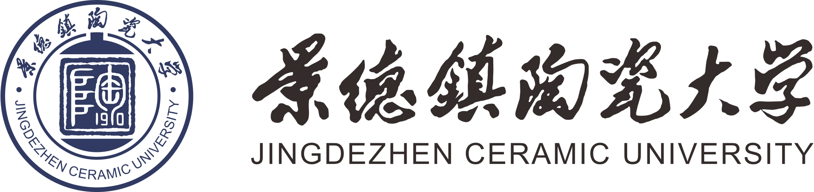
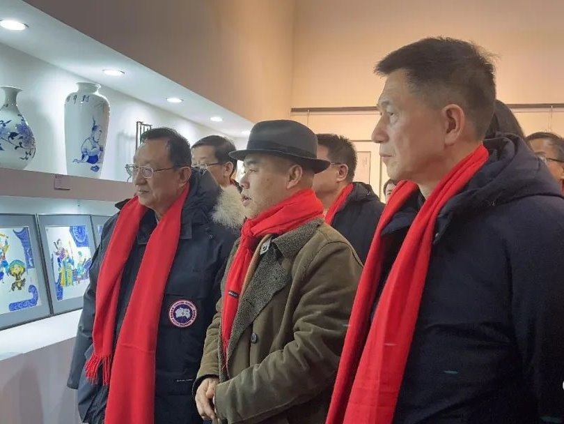
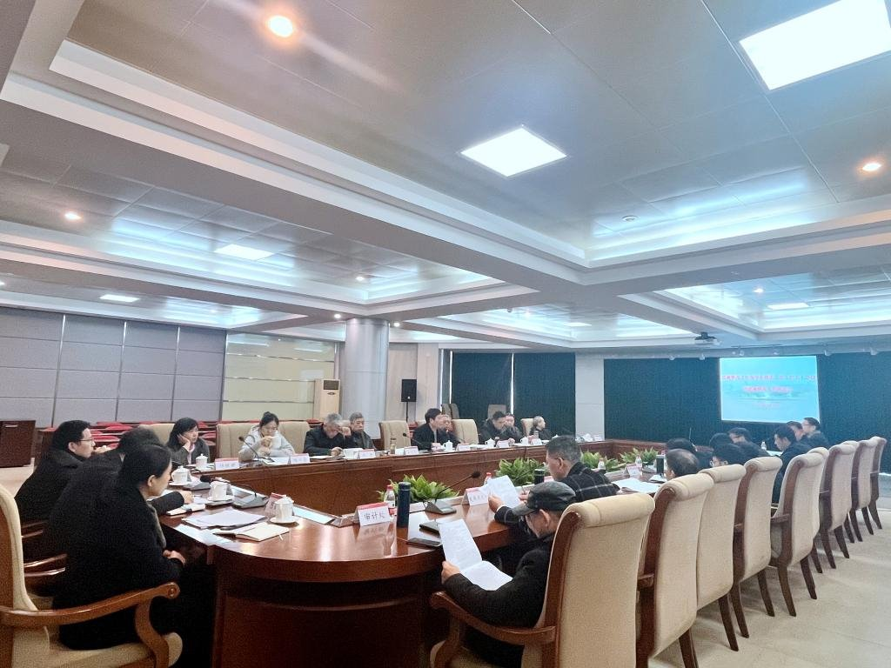
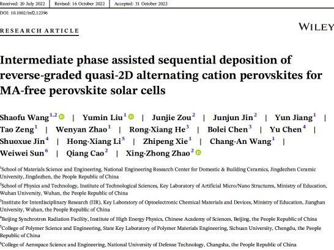
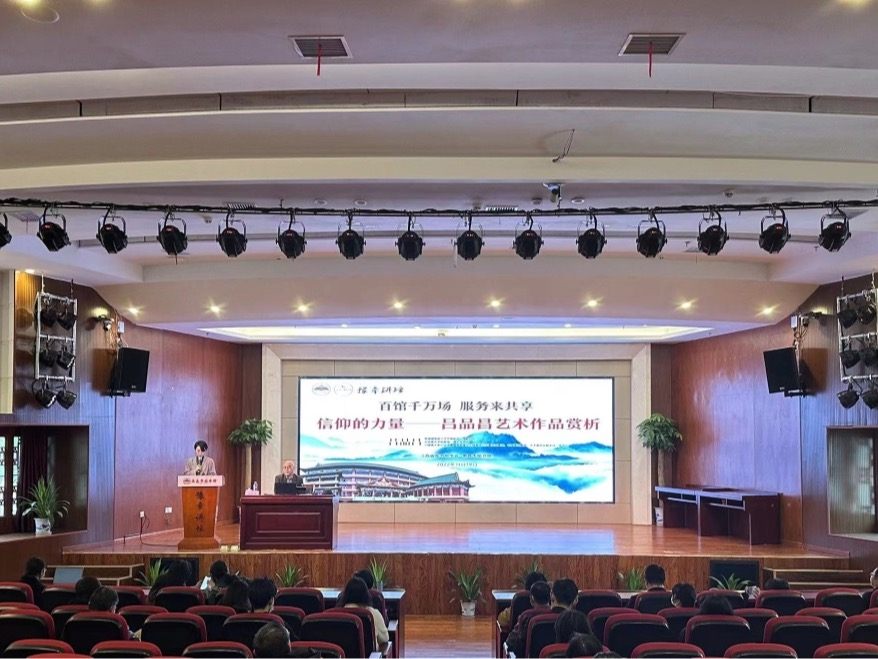
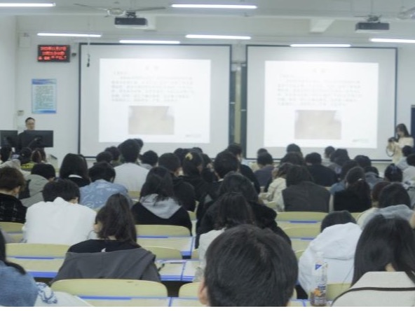
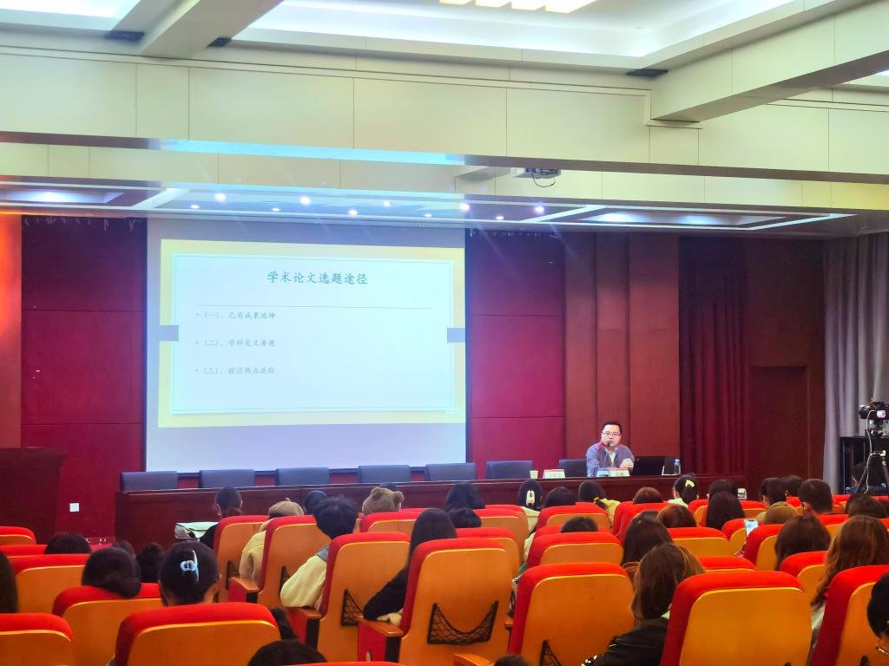

2023年2月15日 星期三 癸卯年正月廿五
学生
|
教职工
中文
EN

学校概况
机构设置
党建思政
教育教学
科学研究
国际交流
招生就业
校园文化
陶大校友
陶大新闻

守正创新，引领发展｜中国非遗协会陶瓷分会主办首届中国非遗年会陶瓷精品展
本网讯2月17日晚，首届中国非遗年会陶瓷艺术精品展在陕西正式开展。展览在景德镇市人民政府的大力支持和中国非物质文化遗产保护协会指导下
详细内容
2023-02-20

我校召开巡视整改工作领导小组第三次（扩大）会议暨巡视整改工作推进会议
本网讯（刘小清） 2月19日上午，景德镇陶瓷大学巡视整改工作领导小组第三次（扩大）会议暨巡视整改工作推进会议召开。校党委书记李良智主持并讲话。
详细内容
2023-02-20

通知公告
02-17
【教务处】关于拟推荐参加“第三届江西省高校教师教学创新大赛”教师的公示
02-16
【【招标与采购管理中心】景德镇陶瓷大学材料学院VR综合实验室改造工程（采购编号：JXDY2023-GC-F0003）谈判公告
02-15
【人事处】景德镇陶瓷大学2022年度硕士教师公开招聘资格初审通过人员名单公示
02-13
【教务处】关于拟推荐参加“第三届江西省高校教师教学创新大赛”教师的公示
02-10
【招标与采购管理中心】关于“江西省公共资源交易平台电子交易系统——政府采购业务”流程调整有关事项的通知
媒体陶大
视频新闻
专题系列
01-01
【学习强国江西学习平台】习近平主席新年贺词在江西干部群众中引发热烈反响
12-30
【学习强国景德镇学习平台】江西景德镇：韩国留学生瓷都逐梦
12-26
【新华社】新华社报道我校埃及留学生马赫迪·艾哈迈德：在中阿同行中遇到更闪亮的自己
12-01
【CCTV3】[文化十分]十分探馆·景德镇陶瓷大学元青花博物馆 融多元文化 创中国之美
12-01
【央广网】山西夏县打造陶瓷文化品牌 助力产业转型升级
公共平台
数字化校园
学校邮件系统
VPN接入系统
学术热点

校党委副书记、副校长（主持行政工作）吕品昌作客“豫章讲坛”——解读“信仰的力量”

“健康教育瓷都行”活动走进我校

【高岭讲坛】复旦大学教授陈靓来校讲学
全国大中小学思政课一体化建设联盟启动仪式暨党的二十大精神融入大中小学思政课论坛在景德镇举行